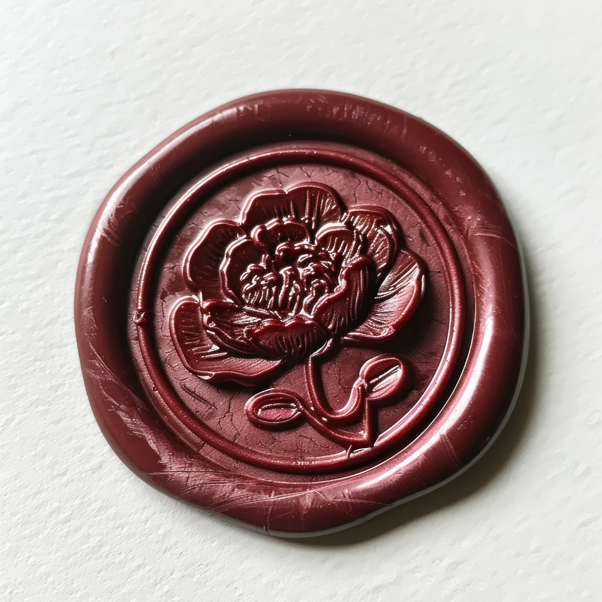

I think the most powerful witchcraft you’ll ever do isn’t the full moon circle, the crystal grid, the salt ring, the big chant you build up to once in a while. That stuff has its place. But it’s the daily, unglamorous habit-level work, your actual protection, your shielding, your manifesting, that gets you further than any once-in-a-while ritual mess ever will.
One of the simplest and most effective versions of that daily work: a protective bubble around yourself.
This isn’t a new idea, you’ve probably heard some version of it before. But most people try it once, feel silly, and never actually build the habit. Here’s how to make it real.
Build the bubble
Picture a bubble surrounding your whole body. Sit with it. Breathe into it. It doesn’t have to be made of the same energy every day, build it out of whatever you actually need that day. Some days it’s light, bright, genuinely joyful energy, the kind that just feels good to stand inside. Other days it’s a “leave me the fuck alone” bubble, spiked, slick, nothing sticking to it, harsh words rolling straight off. Both are valid. Build the one you actually need, not the one you think you’re supposed to want.

Check in on it
Once it’s up, keep checking in throughout the day. Does it still feel strong? Has something worn it thin, or broken through it entirely? If it’s weakened, don’t panic, just send it a bit more energy and rebuild. Treat it exactly like a muscle. If something breaks it down, you don’t give up on having a bubble, you top it back up and keep going. The more consistently you practise this, the stronger both the bubble and the shield around you become over time.
Match your real world to it
The version of you that’s out here living your actual day has to match the bubble you built. You can’t set up a bubble that says leave me alone, then walk out wearing a shirt that says free hugs and giving off completely open, approachable energy. It won’t hold. If your bubble is light and easy, just a general protective “I just want to be protected from whatever bullshit comes my way today,” that one works no matter what vibe you’re giving off. But if you need something more with more animosity than that, your outward presentation needs to actually carry that energy too, or the bubble has nothing real to reinforce it.
Build it daily. Check on it often. Let your real self back it up. That’s the whole practice.
← Back to Rituals